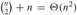

|
|
< Day Day Up > |
|
Our next example of dynamic programming is an algorithm that solves the problem of matrix-chain multiplication. We are given a sequence (chain) 〈A1, A2, ..., An〉 of n matrices to be multiplied, and we wish to compute the product
We can evaluate the expression (15.10) using the standard algorithm for multiplying pairs of matrices as a subroutine once we have parenthesized it to resolve all ambiguities in how the matrices are multiplied together. A product of matrices is fully parenthesized if it is either a single matrix or the product of two fully parenthesized matrix products, surrounded by parentheses. Matrix multiplication is associative, and so all parenthesizations yield the same product. For example, if the chain of matrices is 〈A1, A2, A3, A4〉, the product A1 A2 A3 A4 can be fully parenthesized in five distinct ways:
(A1 (A2 (A3 A4))) ,
(A1 ((A2 A3) A4)) ,
((A1 A2) (A3 A4)) ,
((A1 (A2 A3)) A4) ,
The way we parenthesize a chain of matrices can have a dramatic impact on the cost of evaluating the product. Consider first the cost of multiplying two matrices. The standard algorithm is given by the following pseudocode. The attributes rows and columns are the numbers of rows and columns in a matrix.
MATRIX-MULTIPLY(A, B) 1 if columns[A] ≠ rows[B] 2 then error "incompatible dimensions" 3 else for i ← 1 to rows[A] 4 do for j ← 1 to columns[B] 5 do C[i, j] ← 0 6 for k ← 1 to columns[A] 7 do C[i, j] ← C[i, j] + A[i, k] · B[k, j] 8 return C
We can multiply two matrices A and B only if they are compatible: the number of columns of A must equal the number of rows of B. If A is a p × q matrix and B is a q × r matrix, the resulting matrix C is a p × r matrix. The time to compute C is dominated by the number of scalar multiplications in line 7, which is pqr. In what follows, we shall express costs in terms of the number of scalar multiplications.
To illustrate the different costs incurred by different parenthesizations of a matrix product, consider the problem of a chain 〈A1, A2, A3〉 of three matrices. Suppose that the dimensions of the matrices are 10 × 100, 100 × 5, and 5 × 50, respectively. If we multiply according to the parenthesization ((A1 A2) A3), we perform 10 · 100 · 5 = 5000 scalar multiplications to compute the 10 × 5 matrix product A1 A2, plus another 10 · 5 · 50 = 2500 scalar multiplications to multiply this matrix by A3, for a total of 7500 scalar multiplications. If instead we multiply according to the parenthesization (A1 (A2 A3)), we perform 100 · 5 · 50 = 25,000 scalar multiplications to compute the 100 × 50 matrix product A2 A3, plus another 10 · 100 · 50 = 50,000 scalar multiplications to multiply A1 by this matrix, for a total of 75,000 scalar multiplications. Thus, computing the product according to the first parenthesization is 10 times faster.
The matrix-chain multiplication problem can be stated as follows: given a chain 〈A1, A2, ..., An〉 of n matrices, where for i = 1, 2, ..., n, matrix Ai has dimension pi-1 × pi, fully parenthesize the product A1 A2 An in a way that minimizes the number of scalar multiplications.
Note that in the matrix-chain multiplication problem, we are not actually multiplying matrices. Our goal is only to determine an order for multiplying matrices that has the lowest cost. Typically, the time invested in determining this optimal order is more than paid for by the time saved later on when actually performing the matrix multiplications (such as performing only 7500 scalar multiplications instead of 75,000).
Before solving the matrix-chain multiplication problem by dynamic programming, let us convince ourselves that exhaustively checking all possible parenthesizations does not yield an efficient algorithm. Denote the number of alternative parenthesizations of a sequence of n matrices by P(n). When n = 1, there is just one matrix and therefore only one way to fully parenthesize the matrix product. When n ≥ 2, a fully parenthesized matrix product is the product of two fully parenthesized matrix subproducts, and the split between the two subproducts may occur between the kth and (k + 1)st matrices for any k = 1, 2, ..., n - 1. Thus, we obtain the recurrence
Problem 12-4 asked you to show that the solution to a similar recurrence is the sequence of Catalan numbers, which grows as Ω(4n/n3/2). A simpler exercise (see Exercise 15.2-3) is to show that the solution to the recurrence (15.11) is Ω(2n). The number of solutions is thus exponential in n, and the brute-force method of exhaustive search is therefore a poor strategy for determining the optimal parenthesization of a matrix chain.
Our first step in the dynamic-programming paradigm is to find the optimal substructure and then use it to construct an optimal solution to the problem from optimal solutions to subproblems. For the matrix-chain multiplication problem, we can perform this step as follows. For convenience, let us adopt the notation Ai‥j, where i ≤ j, for the matrix that results from evaluating the product Ai Ai+1 Aj. Observe that if the problem is nontrivial, i.e., i < j, then any parenthesization of the product Ai Ai+1 Aj must split the product between Ak and Ak+1 for some integer k in the range i ≤ k < j. That is, for some value of k, we first compute the matrices Ai‥k and Ak+1‥j and then multiply them together to produce the final product Ai‥j. The cost of this parenthesization is thus the cost of computing the matrix Ai‥k, plus the cost of computing Ak+1‥j, plus the cost of multiplying them together.
The optimal substructure of this problem is as follows. Suppose that an optimal parenthesization of Ai Ai+1 Aj splits the product between Ak and Ak+1. Then the parenthesization of the "prefix" subchain Ai Ai+1 Ak within this optimal parenthesization of Ai Ai+1 Aj must be an optimal parenthesization of Ai Ai+1 Ak. Why? If there were a less costly way to parenthesize Ai Ai+1 Ak, substituting that parenthesization in the optimal parenthesization of Ai Ai+1 Aj would produce another parenthesization of Ai Ai+1 Aj whose cost was lower than the optimum: a contradiction. A similar observation holds for the parenthesization of the subchain Ak+1 Ak+2 Aj in the optimal parenthesization of Ai Ai+1 Aj: it must be an optimal parenthesization of Ak+1 Ak+2 Aj.
Now we use our optimal substructure to show that we can construct an optimal solution to the problem from optimal solutions to subproblems. We have seen that any solution to a nontrivial instance of the matrix-chain multiplication problem requires us to split the product, and that any optimal solution contains within it optimal solutions to subproblem instances. Thus, we can build an optimal solution to an instance of the matrix-chain multiplication problem by splitting the problem into two subproblems (optimally parenthesizing Ai Ai+1 Ak and Ak+1 Ak+2 Aj), finding optimal solutions to subproblem instances, and then combining these optimal subproblem solutions. We must ensure that when we search for the correct place to split the product, we have considered all possible places so that we are sure of having examined the optimal one.
Next, we define the cost of an optimal solution recursively in terms of the optimal solutions to subproblems. For the matrix-chain multiplication problem, we pick as our subproblems the problems of determining the minimum cost of a parenthesization of Ai Ai+1 Aj for 1 ≤ i ≤ j ≤ n. Let m[i, j] be the minimum number of scalar multiplications needed to compute the matrix Ai‥j; for the full problem, the cost of a cheapest way to compute A1‥n would thus be m[1, n].
We can define m[i, j] recursively as follows. If i = j, the problem is trivial; the chain consists of just one matrix Ai‥i = Ai, so that no scalar multiplications are necessary to compute the product. Thus, m[i, i] = 0 for i = 1, 2, ..., n. To compute m[i, j] when i < j, we take advantage of the structure of an optimal solution from step 1. Let us assume that the optimal parenthesization splits the product Ai Ai+1 Aj between Ak and Ak+1, where i ≤ k < j. Then, m[i, j] is equal to the minimum cost for computing the subproducts Ai‥k and Ak+1‥j, plus the cost of multiplying these two matrices together. Recalling that each matrix Ai is pi-1 × pi, we see that computing the matrix product Ai‥k Ak+1‥j takes pi-1 pk pj scalar multiplications. Thus, we obtain
m[i, j ] = m[i, k] + m[k + 1, j ] + pi-1 pk pj.
This recursive equation assumes that we know the value of k, which we do not. There are only j - i possible values for k, however, namely k = i, i + 1, ..., j - 1. Since the optimal parenthesization must use one of these values for k, we need only check them all to find the best. Thus, our recursive definition for the minimum cost of parenthesizing the product Ai Ai+1 Aj becomes
The m[i, j] values give the costs of optimal solutions to subproblems. To help us keep track of how to construct an optimal solution, let us define s[i, j] to be a value of k at which we can split the product Ai Ai+1 Aj to obtain an optimal parenthesization. That is, s[i, j] equals a value k such that m[i, j] = m[i, k] + m[k + 1, j] + pi-1 pk pj.
At this point, it is a simple matter to write a recursive algorithm based on recurrence (15.12) to compute the minimum cost m[1, n] for multiplying A1 A2 An. As we shall see in Section 15.3, however, this algorithm takes exponential time, which is no better than the brute-force method of checking each way of parenthesizing the product.
The important observation that we can make at this point is that we have relatively few subproblems: one problem for each choice of i and j satisfying 1 ≤ i ≤ j ≤ n, or  in all. A recursive algorithm may encounter each subproblem many times in different branches of its recursion tree. This property of overlapping subproblems is the second hallmark of the applicability of dynamic programming (the first hallmark being optimal substructure).
Instead of computing the solution to recurrence (15.12) recursively, we perform the third step of the dynamic-programming paradigm and compute the optimal cost by using a tabular, bottom-up approach. The following pseudocode assumes that matrix Ai has dimensions pi-1 × pi for i = 1, 2, ..., n. The input is a sequence p = 〈p0, p1, ..., pn〉, where length[p] = n + 1. The procedure uses an auxiliary table m[1 ‥ n, 1 ‥ n] for storing the m[i, j] costs and an auxiliary table s[1 ‥ n, 1 ‥ n] that records which index of k achieved the optimal cost in computing m[i, j]. We will use the table s to construct an optimal solution.
In order to correctly implement the bottom-up approach, we must determine which entries of the table are used in computing m[i, j]. Equation (15.12) shows that the cost m[i, j] of computing a matrix-chain product of j - i + 1 matrices depends only on the costs of computing matrix-chain products of fewer than j - i + 1 matrices. That is, for k = i, i + 1, ..., j - 1, the matrix Ai‥k is a product of k - i + 1 < j - i + 1 matrices and the matrix Ak+1‥j is a product of j - k < j - i + 1 matrices. Thus, the algorithm should fill in the table m in a manner that corresponds to solving the parenthesization problem on matrix chains of increasing length.
MATRIX-CHAIN-ORDER(p) 1 n ← length[p] - 1 2 for i ← 1 to n 3 do m[i, i] ← 0 4 for l ← 2 to n ▹l is the chain length. 5 do for i ← 1 to n - l + 1 6 do j ← i + l - 1 7 m[i, j] ← ∞ 8 for k ← i to j - 1 9 do q ← m[i, k] + m[k + 1, j] + pi-1 pkpj 10 if q < m[i, j] 11 then m[i, j] ← q 12 s[i, j] ← k 13 return m and s
The algorithm first computes m[i, i] ← 0 for i = 1, 2, ..., n (the minimum costs for chains of length 1) in lines 2-3. It then uses recurrence (15.12) to compute m[i, i + 1] for i = 1, 2, ..., n - 1 (the minimum costs for chains of length l = 2) during the first execution of the loop in lines 4-12. The second time through the loop, it computes m[i, i + 2] for i = 1, 2, ..., n - 2 (the minimum costs for chains of length l = 3), and so forth. At each step, the m[i, j] cost computed in lines 9-12 depends only on table entries m[i, k] and m[k + 1, j] already computed.
Figure 15.3 illustrates this procedure on a chain of n = 6 matrices. Since we have defined m[i, j] only for i ≤ j, only the portion of the table m strictly above the main diagonal is used. The figure shows the table rotated to make the main diagonal run horizontally. The matrix chain is listed along the bottom. Using this layout, the minimum cost m[i, j] for multiplying a subchain Ai Ai+1 Aj of matrices can be found at the intersection of lines running northeast from Ai and northwest from Aj. Each horizontal row in the table contains the entries for matrix chains of the same length. MATRIX-CHAIN-ORDER computes the rows from bottom to top and from left to right within each row. An entry m[i, j] is computed using the products pi-1 pk pj for k = i, i + 1, ..., j - 1 and all entries southwest and southeast from m[i, j].
|
matrix |
dimension |
|---|---|
|
|
|
|
A1 |
30 × 35 |
|
A2 |
35 × 15 |
|
A3 |
15 × 5 |
|
A4 |
5 × 10 |
|
A5 |
10 × 20 |
|
A6 |
20 × 25 |
The tables are rotated so that the main diagonal runs horizontally. Only the main diagonal and upper triangle are used in the m table, and only the upper triangle is used in the s table. The minimum number of scalar multiplications to multiply the 6 matrices is m[1, 6] = 15,125. Of the darker entries, the pairs that have the same shading are taken together in line 9 when computing
A simple inspection of the nested loop structure of MATRIX-CHAIN-ORDER yields a running time of O(n3) for the algorithm. The loops are nested three deep, and each loop index (l, i, and k) takes on at most n -1 values. Exercise 15.2-4 asks you to show that the running time of this algorithm is in fact also Ω(n3). The algorithm requires Θ(n2) space to store the m and s tables. Thus, MATRIX-CHAIN-ORDER is much more efficient than the exponential-time method of enumerating all possible parenthesizations and checking each one.
Although MATRIX-CHAIN-ORDER determines the optimal number of scalar multiplications needed to compute a matrix-chain product, it does not directly show how to multiply the matrices. It is not difficult to construct an optimal solution from the computed information stored in the table s[1 ‥ n, 1 ‥ n]. Each entry s[i, j] records the value of k such that the optimal parenthesization of Ai Ai+1 ··· Aj splits the product between Ak and Ak+1. Thus, we know that the final matrix multiplication in computing A1‥n optimally is A1‥s[1,n] As[1,n]+1‥n. The earlier matrix multiplications can be computed recursively, since s[1, s[1, n]] determines the last matrix multiplication in computing A1‥s[1,n], and s[s[1, n] + 1, n] determines the last matrix multiplication in computing As[1,n]+1‥n. The following recursive procedure prints an optimal parenthesization of 〈Ai, Ai+1, ..., Aj〉, given the s table computed by MATRIX-CHAIN-ORDER and the indices i and j. The initial call PRINT-OPTIMAL-PARENS(s, 1, n) prints an optimal parenthesization of 〈A1, A2, ..., An〉.
PRINT-OPTIMAL-PARENS(s, i, j)
1 if i = j
2 then print "A"i
3 else print "("
4 PRINT-OPTIMAL-PARENS(s, i, s[i, j])
5 PRINT-OPTIMAL-PARENS(s, s[i, j] + 1, j)
6 print ")"
In the example of Figure 15.3, the call PRINT-OPTIMAL-PARENS(s, 1, 6) prints the parenthesization ((A1 (A2 A3)) ((A4 A5)A6)).
Find an optimal parenthesization of a matrix-chain product whose sequence of dimensions is 〈5, 10, 3, 12, 5, 50, 6〉.
Give a recursive algorithm MATRIX-CHAIN-MULTIPLY(A, s, i, j) that actually performs the optimal matrix-chain multiplication, given the sequence of matrices 〈A1, A2, ..., An〉, the s table computed by MATRIX-CHAIN-ORDER, and the indices i and j. (The initial call would be MATRIX-CHAIN-MULTIPLY(A, s, 1, n).)
Let R(i, j) be the number of times that table entry m[i, j] is referenced while computing other table entries in a call of MATRIX-CHAIN-ORDER. Show that the total number of references for the entire table is
(Hint: You may find equation (A.3) useful.)
|
|
< Day Day Up > |
|